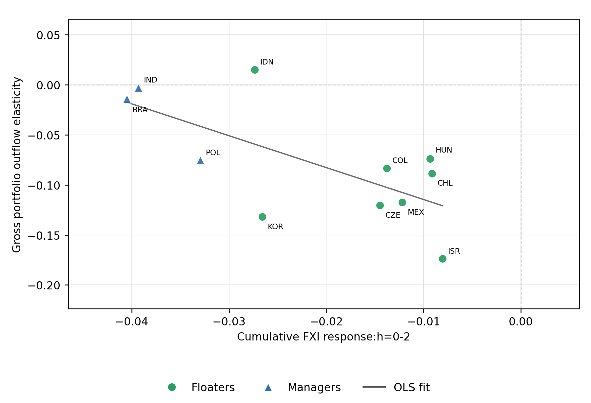
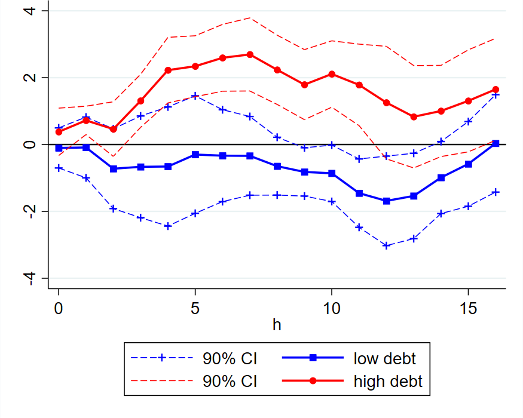
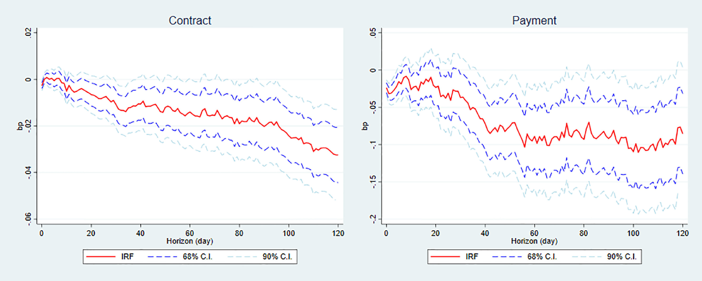
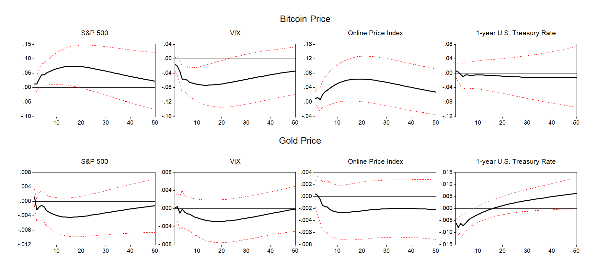

Welcome. I am a Ph.D. candidate in Economics at Johns Hopkins University. I specialize in international economics and finance, and I am on the 2026-2027 job market.
My research interests lie in international macroeconomics and macro-finance, with a focus on capital flows, exchange rates, and financial stability in emerging market economies. My work examines how domestic investors’ international portfolios shape economies’ responses to global financial shocks and influence the effectiveness of exchange-rate and foreign-exchange intervention policies.
My previous research includes studies of fiscal policy effectiveness across different states of the macroeconomy and a study of cryptocurrency.
Abstract: This paper studies how domestic investors absorb global shocks in emerging markets and how private absorption shapes foreign exchange intervention (FXI). It develops a demand-system model in which residents’ return-elastic retrenchment from foreign assets governs the optimal FXI policy as well as the transmission of foreign demand shocks to expected excess currency returns. Using a panel IV regression of 19 emerging markets we find that private retrenchment is less elastic to return differential where FXI is more intensive. The model predicts stronger absorption when investors with flexible and internationally diversified portfolios hold more wealth. Consistent with this prediction, a 10-percentage-point increase in pension-fund and insurance-company assets relative to GDP is associated with a roughly 10 percent larger semi-elasticity. Security-level data on Colombian pension funds show that their net purchases of foreign securities fall when expected excess currency returns rise, consistent with the mechanism. Finally, controlling for pension-fund and insurance-company assets widens the estimated difference between floaters and interveners in the response of expected excess currency returns to VIX changes.

Gross Portfolio Outflow’s Elasticity to Excess Currency Return against FXI Intensity
Abstract: This study investigates whether household indebtedness influences the macroeconomic effects of U.S. tax changes. By applying a state-dependent local projection method to the exogenous tax shock series, we find that a tax cut is more effective in stimulating output when the economy is characterized by higher household indebtedness. The household debt-dependent tax policy is primarily driven by (i) the response of private consumption, not private investment; (ii) changes in personal income tax, not corporate income tax, suggesting the relevance of a higher MPC of constrained households in understanding the documented state dependence. In response to a tax cut, labor supply also increases more during a high-debt state, which is consistent with the micro-level evidence on the labor supply of constrained households, thereby contributing to higher tax multipliers. Our findings are robust to a battery of sensitivity checks, especially controlling for the additional states of the economy considered in the literature.

Impulse Response of GDP to a Tax Cut Shock by Household Debt Level
Abstract: Are government spending shocks inflationary at the zero lower bound (ZLB)? Despite the importance of the inflation channel in amplifying government spending multipliers at the ZLB, empirical studies have not provided a clear answer to this question. Exploiting newly constructed high-frequency data on government spending and the price index of the U.S. economy, we find that prices decline in response to a positive government spending shock at the ZLB. Government spending shocks are also more deflationary at the ZLB than during normal times. While our finding is difficult to reconcile with standard New Keynesian models, which predict a larger fiscal multiplier following fiscal expansion at the ZLB—driven by rising inflation and a falling real interest rate—a model with credit constraints can explain this anomaly.

Impulse Response of Online Price Index to Defense Spending Contract and Payment Shock
Abstract: During the recent COVID-19 pandemic, many commonalities shared by Bitcoin and gold raise the question of whether Bitcoin can hedge inflation or provide a safe haven as gold often does. By estimating a Vector Autoregression (VAR) model, we provide systematic evidence on the relationship among inflation, uncertainty, and Bitcoin and gold prices. Bitcoin appreciates against inflation (or inflation expectation) shocks, confirming its inflation-hedging property claimed by investors. However, unlike gold, Bitcoin prices decline in response to financial uncertainty shocks, rejecting the safe-haven quality. Interestingly, Bitcoin prices do not decrease after policy uncertainty shocks, partly consistent with the notion of Bitcoin’s independence from government authorities. We also find an interesting asymmetry in the drivers of Bitcoin price dynamics between the bullish and bearish market. The main findings hold with or without the COVID-19 pandemic episode.

Impulse Response of Bitcoin and Gold Prices to Different Shocks
Teaching
TA
Topics in International Macroeconomics and FinanceJohns Hopkins University, Spring 2026 and Fall 2024
Financial Markets and InstitutionsJohns Hopkins University, Fall 2025
Corporate FinanceJohns Hopkins University, Spring 2025
MacroeconomicsYonsei University, undergraduate course in English, Fall 2020
Analysis of International Financial MarketYonsei University, undergraduate course in English, Fall 2019